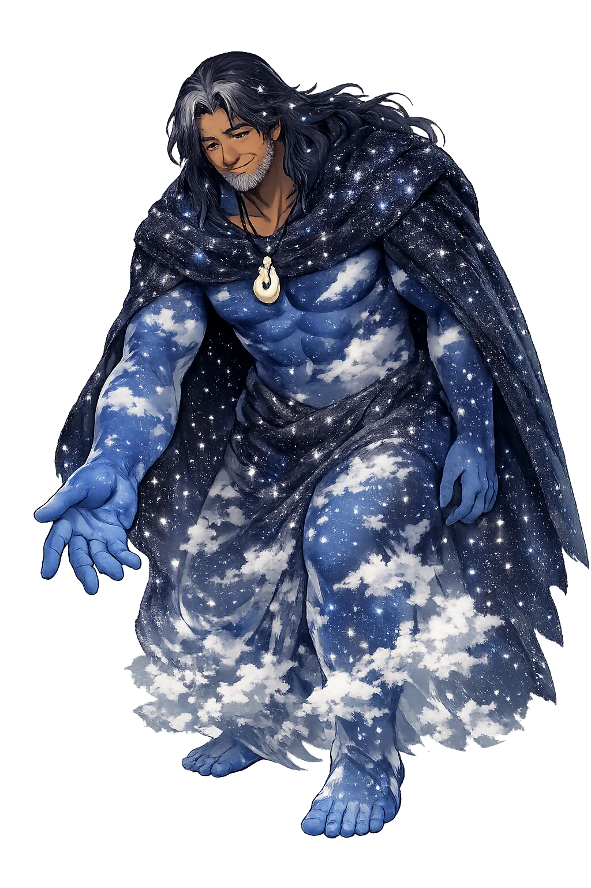
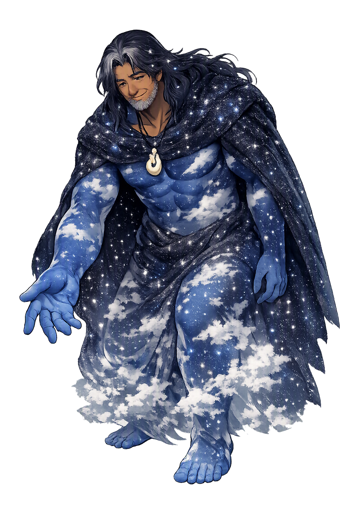

The Living Myth
Sky, Fatherhood, Creation · 'Great heaven' (Māori rangi 'sky, heavens' + nui 'great'), the sky father prised apart from the earth mother Papatūānuku by their children.

Stories of Ranginui
Ranginui's mythology is Māori cosmogony itself, as recorded by Sir George Grey and John White from oral tradition in the nineteenth century: the primordial embrace, the separation, and the war among the children that followed. It is a living narrative — still told on marae, still carved into meeting houses — and it explains the visible world: rain, mist, storm, and the light between sky and earth.
In the beginning the sky father Ranginui and the earth mother Papatūānuku clung together in an embrace that knew no end, and in the darkness between their bodies their children were born — seventy sons in the telling recorded by Grey in Polynesian Mythology (1854). There was no light: the world was the cramped hollow of the parents' clasp, and the children grew hemmed in on every side, some of them longing for room and for brightness, others content in the warm dark. The myth opens not with a bang but with an embrace, and its first claim is psychological before it is cosmological — love so complete that it suffocates: the parents' happiness is the children's captivity, and creation cannot begin until something beloved breaks.
The children argued over how to win light. Tūmatauenga, the fierce one, proposed killing the parents — a plan the others rejected with horror. Then Tāne, the resourceful one, lay on his back between them and, bracing his head against the earth and his feet against the sky, pushed (Grey; White, Ancient History of the Māori). Ranginui cried out in agony as he was lifted, and Papatūānuku groaned beneath him, still clinging, her torn body leaving the marks of her grief in the hills and valleys of the earth. Alone among the brothers, Tāwhirimāteā, lord of winds, sided with his father and withdrew in rage to the sky. The separation is the Māori account of why there is a world at all: light, space, and death itself enter existence in the moment the divided parents grieve — the world begins as an act of necessary violence against love.
The parents never resigned themselves to the parting, and the tradition reads the weather as their continuing grief. The rain that falls from Ranginui is his tears of longing for Papatūānuku; the mist that rises from her breast is her sighs, drifting up to meet him (Grey; Orbell, Māori Myth and Legend). In some tellings the pale bloom on the riverbanks of harakeke, the New Zealand flax, marks where the tears of the pair fell thickest. The myth makes weather into emotion: every downpour and every soft morning fog is the conversation of the divided lovers — a cosmos that is not machinery but kinship, still grieving, still in love, and entirely unashamed of either.
Tāwhirimāteā, who alone had opposed the separation, took his grieving father into the sky and made war on his brothers. He gouged out the eyes of Tangaroa's children — the fish and the crawling things of the sea, which is why the sea's creatures hide in the deep — and he hurled his winds and storms against Tāne's forests, snapping the trees. Tūmatauenga stood against him and won, and the winds were driven up into the fatherless sky (Grey; Best, Māori Religion and Mythology). The war among the children is the myth's hardest lesson: the act that creates the world also divides it. Harmony among the forces of nature is never given — it was fought for once, and it must be remade continually, which is why the winds still test the trees.
Left alone in the high darkness, Ranginui needed light, and Tāne set the stars in the body of his father. In the traditions recorded by White, the stars are children of the sky hung as lamps to adorn him, and among them are the navigational stars by which the ancestors steered their canoes across the Pacific to Aotearoa. The crowning act of the separation is not punishment but decoration: Tāne, who pushed his parents apart, gives his father the stars as compensation. The night sky thus carries the story in its own substance — the sky father's beauty is his children's doing, and the lights by which humans find their way across the ocean are a family's peace offering to its father, hung where the whole world can steer by it.
Sky
Ranginui is the sky father of Māori cosmogony — rangi, 'sky', with nui, 'great'. He and the earth mother Papatūānuku lay locked in an embrace that left the world in darkness, until their children forced them apart so that light, and humanity, could live between them. He is separation and longing: the rain is his tears, the mist her sighs, and the space between sky and earth the world we inhabit.
Rangi 'sky' + nui 'great': Great Heaven, the primordial sky father of Māori cosmogony (Williams, Dictionary of the Māori Language).
The primordial sky locked in darkness with the earth mother Papatūānuku until their children prised them apart.
The separation of Rangi and Papa is the founding story of the Māori world, still told on every marae and carved into every wharenui.
Honored as a flagship temple; the Māori form needs no diacritics, so the restoration is the scholarly citation form, capitalization and all.
From the original script to the living URL
Ranginui
The name survives in scholarly transliteration. Ranginui is the standard Polynesian romanisation, documented in academic sources — “'Great heaven' (Māori rangi 'sky, heavens' + nui 'great'), the sky father prised apart from the earth mother Papatūānuku by their children.”. Because the spelling uses only Latin letters, the form is the same in both ASCII and Unicode.
No indigenous writing system is securely attested for individual polynesian names. The form shown is a modern scholarly transliteration.
ranginui
The plain ranginui form is identical to the Unicode restoration. Because this name is already written in Latin letters, no diacritics, stress, or script information were lost — only capitalization differs.
Ranginui
The Unicode restoration does not need to recover lost marks for Ranginui. Its value is canonical spelling and consistent cataloguing, not the reconstruction of erased orthography. The domain is readable as-is to both DNS and humanity.
Ranginui.com
This restoration is written entirely in ASCII letters — no Punycode encoding stands between Ranginui and the DNS. The domain reads identically to machines and to human eyes.
Owned, ideal, and ASCII forms of Ranginui
Ranginui
The full Unicode restoration. ranginui.com is not in the PuniCodex collection — it is watched for release; if it drops, this temple upgrades to an owned flagship.
How Ranginui was spoken
How Ranginui is preserved in writing
No indigenous writing system is securely attested for individual polynesian names. The form shown is a modern scholarly transliteration.
Contribute scholarly provenance →Ranginui is the god of necessary grief. The myth refuses the fantasy that love alone could sustain the world: the parents' perfect embrace is a prison for their children, and the world begins only when Tāne's legs force the lovers apart. What the story understands — with a psychological precision rare among cosmogonies — is that separation is not the failure of love but its condition. Rangi and Papa do not stop loving each other: the rain is his tears, the mist her sighs, and the whole weather of the world is their continuing conversation.
Enter Extended Lore